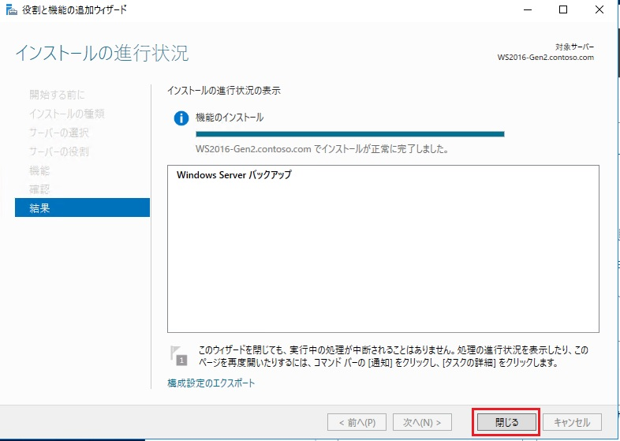
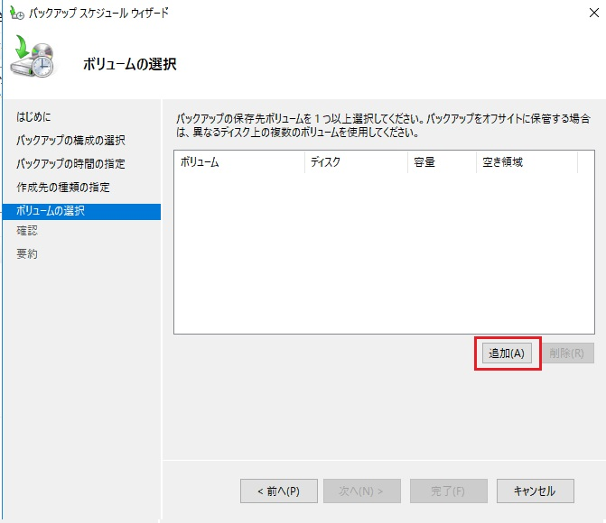

本記事は、マイクロソフト社員によって公開されております。
こんにちは、Windows サポートチームの三浦です。
本日は Windows Server バックアップの概要やバックアップ手順などを紹介させていただきます。
リストア手順については、こちら の記事をご参照ください。
機能概要
Windows Server バックアップは Windows Server OS に標準搭載されているバックアップ機能であり、以下のバックアップが実行可能です。
・ベアメタル バックアップ
・システム状態のバックアップ
・ボリューム単位でのバックアップ
・ファイル単位でのバックアップ
・仮想マシンのバックアップ (Hyper-V ホストの場合)
また、バックアップ先としてはローカル ドライブ、もしくは、SMB 上のファイル共有が選択でき、バックアップ先をローカル ドライブに指定した場合は、最大、512 世代のバックアップが取得可能です。
※ バックアップ先を SMB 上のファイル共有に指定した場合は、最新の 1 世代のみがバックアップされ、バックアップの世代管理は行われません。
制限事項
・同構成への端末へリストアを行うことを前提に設計されているため、ハードウェア構成が大きく異なるサーバーへのリストアを行った場合、リストアが正しく完了しない場合がございます。(異なるサーバー上へのデータ移行を目的とした利用もサポートされておりません。)
・バックアップ先は、NTFS もしくは ReFS でフォーマットされたボリュームである必要がございます。
・バックアップ保存先を自ホスト上のファイル共有に指定することは非サポートとなります。
インストール手順
Windows Server バックアップは既定でインストールされていないため、バックアップ機能を利用するには、機能のインストールが必要です。
機能のインストールが行われていない環境では、下記の手順を参考に、機能のインストールを実行ください。
- 管理者権限を持つユーザーでログオンします。
- [サーバー マネージャー] を開き、[管理] - [役割と機能の追加] の順に選択します。
- [役割と機能の追加ウィザード] が起動しましたら、[開始する前に] で [次へ] を選択します。
- [インストールの種類の選択] で [役割ベースまたは機能ベースのインストール] がチェックされた状態で [次へ] を選択します。
- [対象サーバーの選択] で [サーバー プールからサーバーを選択] をチェックし、[サーバー プール] から対象のサーバーを選択して [次へ] を選択します。
- [サーバーの役割の選択] は既定の状態で [次へ] を選択します。
- 機能の選択] で [Windows Server バックアップ] をチェックし、 [次へ] を選択します。
- [インストール オプションの確認] で [インストール] を選択します。
- [インストールの進行状況] で [インストールが正常に完了しました。] と表示されましたらインストールは完了となります。[閉じる] を選択してウィザードを終了します。

バックアップ手順
以下にバックアップの取得例を記載しますので、バックアップ実行時の参考情報としてご活用ください。
- 管理者権限を持つユーザーでログオンします。
- [サーバー マネージャー] を開き、[ツール] - [Windows Server バックアップ] の順に選択します。
- [Windows Server バックアップ] が起動しましたら、左ペインの [ローカル バックアップ] を選択します。
- 右側の [操作] ペインで [単発バックアップ] を選択します。
- [単発バックアップ ウィザード] が起動しましたら、[バックアップ オプション] で [別のオプション] をチェックして [次へ] を選択します。
- [バックアップの構成の選択] で [サーバー全体] もしくは [カスタム] のいずれかをチェックして [次へ] を選択します。今回の例では [カスタム] を選択します。
- [バックアップする項目を選択] で [項目の追加] を選択します。
- [項目の選択] でバックアップに含めたい項目にチェックを入れて [OK] を選択します。今回の例では、[ベア メタル回復] にチェックを入れます。(ベアメタル回復にチェックを入れると、ベアメタル バックアップに必要な項目にも自動的にチェックが入ります。)
- [バックアップする項目を選択] で指定したバックアップ項目が含まれていることを確認し、[次へ] を選択します。
- [作成先の種類の指定] でバックアップ先を指定し、[次へ] を選択します。今回の例では [ローカル ドライブ] にチェックを入れます。

- [バックアップ先の選択] でバックアップ先ボリュームを指定して [次へ] を選択します。
※ バックアップ先を [リモート共有フォルダー] に指定した場合は、SMB 上のファイル共有を UNC パスでご指定ください。
- [確認] で [バックアップ] を選択してバックアップを開始します。
- [バックアップの進行状況] で [状態] が [完了しました] に変わりましたら、バックアップは完了となります。[閉じる] を選択してウィザードを終了します。
バックアップ スケジュールの構成手順
バックアップを定期実行するためのスケジュールを構成することも可能です。
- 管理者権限を持つユーザーでログオンします。
- [Windows Server バックアップ] を起動し、右側の [操作] ペインで [バックアップ スケジュール] を選択します。
- [バックアップ スケジュール ウィザード] が起動しましたら、[はじめに] で [次へ] を選択します。
- [バックアップ構成の選択] で [サーバー全体] もしくは [カスタム] のいずれかをチェックして [次へ] を選択します。今回の例では [サーバー全体] を選択します。
- [バックアップ時間の指定] でバックアップの実行スケジュールを指定して [次へ] を選択します。今回の例では、1 日 1 回、21:00 にバックアップが開始されるようスケジュールを指定します。
- [作成先の種類の指定] でバックアップ先を指定し、[次へ] を選択します。今回の例では [ボリュームにバックアップする] を選択します。
- [ボリュームの選択] で [追加] を選択します。

- [ボリュームの追加] でバックアップ先に指定するボリュームを選択し [OK] を押下します。
- バックアップ先に指定したボリュームが正しく追加されていることを確認し [次へ] を選択します。
- [確認] で構成内容に問題が無いことを確認し [完了] を選択します。

- [要約] 画面に変わりましたら、スケジュールの構成は完了となり、指定したスケジュールに沿ってバックアップが自動実行されます。[閉じる] を選択してウィザードを終了します。
なお、スケジュールの構成後は、[単発バックアップ] から [スケジュールされたバックアップのオプション] を選択することで、本ウィザードで指定したバックアップ構成で、単発バックアップを実行することも可能です。
いかがでしたでしょうか。本投稿が少しでも皆様のお役に立てば幸いです。
本情報の内容（添付文書、リンク先などを含む）は、作成日時でのものであり、予告なく変更される場合があります。